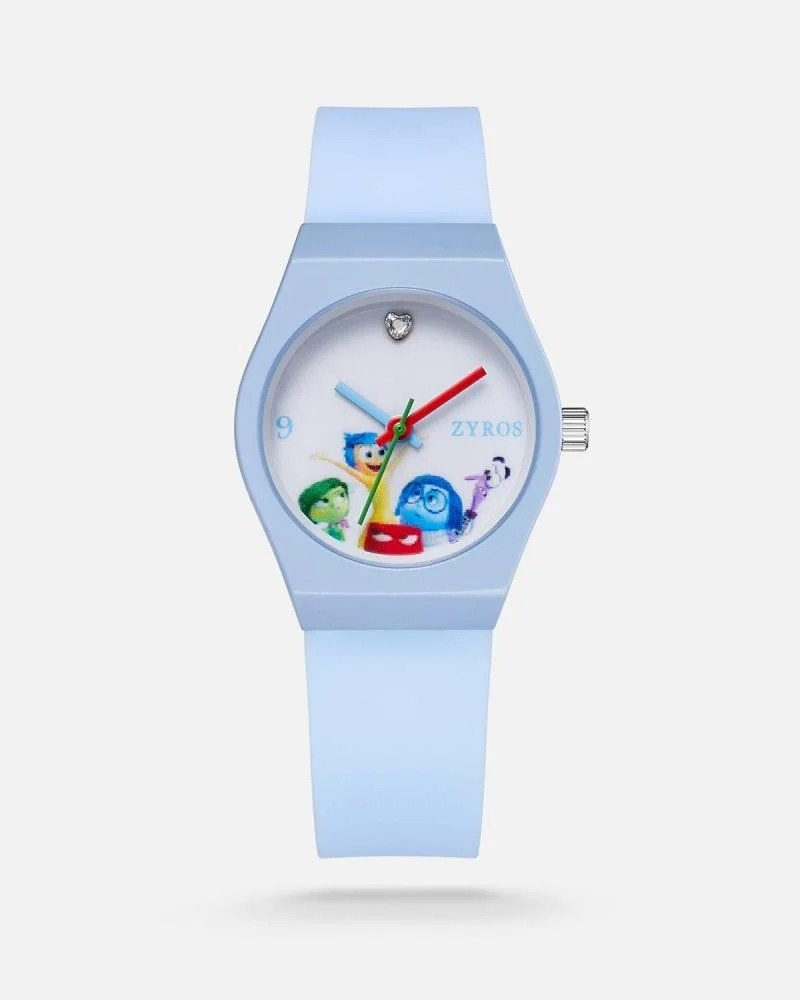
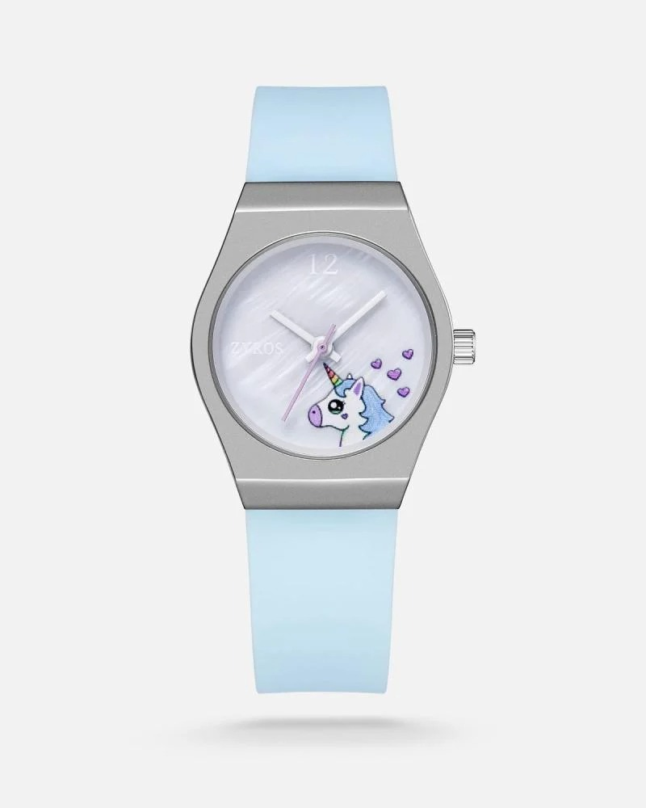

هذه الساعة ليست مجرد أداة لمعرفة الوقت، بل بوابة لعالم مليء بالمشاعر والألوان! بتصميمها اللطيف بالسوار المنقّط بلمسات مرحة، تعكس الساعة روح الطفولة البريئة. أما الميناء، فهو حكاية مصوّرة نابضة بالحياة، حيث تجتمع شخصيات فيلم “Inside Out” في مغامرة زمنية لا تنتهي، تُذكّر الطفل بأهمية المشاعر والتوازن بينها. عقاربها الدقيقة تتحرك وكأنها تهمس للطفل: “كل لحظة هي مغامرة، فلا تفوّت أيًا منها!”، بينما يضفي السوار المريح لمسة من البهجة والمرح تناسب معصم الصغار النشطين. إنها ليست مجرد ساعة، بل صديق صغير يرافق الأطفال في كل لحظة، يذكّرهم بأن كل ثانية تحمل شعورًا جديدًا يستحق أن يُعاش بكل حب!

99 SAR